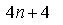
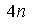
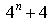
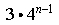
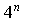

Item: tExplicitGeometric1a
Stem:
The first four terms of a geometric sequence are given below.
Choose the algebraic expression that represents the nth term in this sequence.
4, 16, 64, 256, . . .
Options:





Key:
- Observable: 1.
Score: 0;
Evidence Value: 0.
-
Student:Sorry, that's incorrect. Consider the case where n = 1. The expression you selected evaluates to 4(1) + 4 = 8. But the first term in the sequence is 4, not 8, so this expression can't describe this sequence.
-
Teacher:The student got this item incorrect.
- Observable: 2.
Score: 0;
Evidence Value: 0.
-
Student:Although this expression works for the first term, it is not correct. Consider the case where n = 2. Then the expression you selected evaluates to 4(2) = 8. But the 2nd term in the sequence is 16, not 8. Therefore this expression does not describe this sequence. It is always a good idea to check the expression with several values of n.
-
Teacher:The student got this item incorrect.
- Observable: 3.
Score: 0;
Evidence Value: 0.
-
Student:Sorry, that's incorrect. Consider the case where n = 1. The expression you selected evaluates to 4sup1 + 4 = 8. But the first term in the sequence is 4, not 8, so this expression can't describe this sequence.
-
Teacher:The student got this item incorrect.
- Observable: 4.
Score: 0;
Evidence Value: 0.
-
Student:Sorry, that's incorrect. Consider the case where n = 1. The expression you selected evaluates to 3 * 4sup(1-1) = 3 * 4sup0 = 3 * 1 = 3. But the first term in the sequence is 4, not 3, so this expression can't describe this sequence.
-
Teacher:The student got this item incorrect.
- Observable: 5.
Score: 1;
Evidence Value: 1.
-
Student:Right! You have identified the correct expression for the nth term.
-
Teacher:The student successfully identified the correct explicit formula for an increasing geometric sequence with integer terms.
Metadata:
Item Node: tExplicitGeometric1a,
Difficulty: 1.
Proficiencies: ExplicitGeometric.